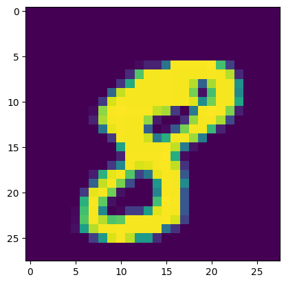

CNN-MINST
# This Python 3 environment comes with many helpful analytics libraries installed
# It is defined by the kaggle/python Docker image: https://github.com/kaggle/docker-python
# For example, here's several helpful packages to load
import numpy as np # linear algebra
import pandas as pd # data processing, CSV file I/O (e.g. pd.read_csv)
# Input data files are available in the read-only "../input/" directory
# For example, running this (by clicking run or pressing Shift+Enter) will list all files under the input directory
import os
for dirname, _, filenames in os.walk('/kaggle/input'):
for filename in filenames:
print(os.path.join(dirname, filename))
# You can write up to 20GB to the current directory (/kaggle/working/) that gets preserved as output when you create a version using "Save & Run All"
# You can also write temporary files to /kaggle/temp/, but they won't be saved outside of the current session
/kaggle/input/model1/model.pth
/kaggle/input/digit-recognizer/sample_submission.csv
/kaggle/input/digit-recognizer/train.csv
/kaggle/input/digit-recognizer/test.csv
# Import necessary packages.
import numpy as np
import pandas as pd
import torch
import torch.nn as nn
import torch.optim as optim
import torch.nn.functional as F
from torch.utils.data import Dataset, DataLoader, Subset, random_split
from torch.optim.lr_scheduler import ReduceLROnPlateau
import torchvision.transforms as transforms
train_df = pd.read_csv("/kaggle/input/digit-recognizer/train.csv")
train_df.head()
.dataframe tbody tr th {
vertical-align: top;
}
.dataframe thead th {
text-align: right;
}
device = torch.device("cuda" if torch.cuda.is_available() else "cpu")
print(device)
cuda
def reshape_pixels(data):
pixels = data.iloc[:, 1:].values.reshape(-1, 28, 28)
return pixels
images = reshape_pixels(train_df)
labels = train_df["label"].to_numpy()
torch_tensors = torch.tensor(images, dtype=torch.float32).unsqueeze(1).to(device)
y_np = [[int(i == label) for i in range(10)] for label in labels]
y_tensor = torch.tensor(y_np, dtype=torch.float32).to(device)
import matplotlib.pyplot as plt
plt.imshow(torch_tensors[10].squeeze().cpu().numpy())
<matplotlib.image.AxesImage at 0x7d8cf87eeb90>

torch_tensors = torch_tensors / 255
# Define a custom Dataset class
class CustomDataset(Dataset):
def __init__(self, X, y, transform=None):
self.X = X
self.y = y
self.transform = transform
def __len__(self):
return len(self.X)
def __getitem__(self, idx):
image = self.X[idx]
label = self.y[idx]
if self.transform:
image = self.transform(image)
return image, label
# Define transformations for augmentation
transform = transforms.Compose([
transforms.RandomRotation(degrees=10), # Random rotation within the range [-10, 10] degrees
transforms.RandomAffine(degrees=0, translate=(0.1, 0.1)), # Random translation
])
# Create an instance of the custom Dataset class
dataset = CustomDataset(torch_tensors, y_tensor, transform=transform)
# Create a DataLoader object
batch_size = 32
# Define the size of the validation set
val_size = 0.2 # 20% of the dataset will be used for validation
# Calculate the number of samples for training and validation
num_samples = len(dataset)
num_val_samples = int(val_size * num_samples)
num_train_samples = num_samples - num_val_samples
# Use random_split to split the dataset into training and validation sets
train_dataset, val_dataset = random_split(dataset, [num_train_samples, num_val_samples])
# Now, create DataLoader objects for training and validation sets
train_loader = DataLoader(train_dataset, batch_size=batch_size, shuffle=True)
val_loader = DataLoader(val_dataset, batch_size=batch_size, shuffle=False)
for batch in train_loader:
# Get the shape of the input data tensor
input_data_shape = batch[0].shape # Assuming input data is at index 0 in the batch
# Print the shape of the input data
print("Shape of input data:", input_data_shape)
Shape of input data: torch.Size([32, 1, 28, 28])
class CNN(nn.Module):
def __init__(self):
super(CNN, self).__init__()
# First convolutional layer
self.conv1 = nn.Conv2d(1, 32, kernel_size=5, padding=2 )
# Second convolutional layer
self.conv2 = nn.Conv2d(32, 32, kernel_size=5, padding=2,stride = 1)
# Max pooling layer
self.maxpool1 = nn.MaxPool2d(kernel_size=2, stride=2)
# Dropout layer
self.dropout1 = nn.Dropout2d(p=0.25)
# Third convolutional layer
self.conv3 = nn.Conv2d(32, 64, kernel_size=3, padding=1)
# Fourth convolutional layer
self.conv4 = nn.Conv2d(64, 64, kernel_size=3, padding=1)
# Max pooling layer
self.maxpool2 = nn.MaxPool2d(kernel_size=2, stride=2)
# Dropout layer
self.dropout2 = nn.Dropout2d(p=0.25)
# Fully connected layers
self.fc1 = nn.Linear(64*7*7, 256)
self.dropout3 = nn.Dropout(p=0.5)
self.fc2 = nn.Linear(256, 10)
def forward(self, x):
# Forward pass through the first convolutional layer
x = F.relu(self.conv1(x))
# Forward pass through the second convolutional layer
x = F.relu(self.conv2(x))
# Max pooling
x = self.maxpool1(x)
# Dropout
x = self.dropout1(x)
# Forward pass through the third convolutional layer
x = F.relu(self.conv3(x))
# Forward pass through the fourth convolutional layer
x = F.relu(self.conv4(x))
# Max pooling
x = self.maxpool2(x)
# Dropout
x = self.dropout2(x)
# Flatten the output for the fully connected layers
x = x.view(-1, 64*7*7)
# Forward pass through the first fully connected layer
x = F.relu(self.fc1(x))
# Dropout
x = self.dropout3(x)
# Forward pass through the second fully connected layer
x = self.fc2(x)
return F.log_softmax(x, dim=1)
# Create an instance of the CNN model
model = CNN().to(device)
# Define loss function and optimizer
criterion = nn.CrossEntropyLoss()
optimizer = optim.SGD(model.parameters(), lr=0.01, momentum=0.9)
scheduler = ReduceLROnPlateau(optimizer, mode='max', factor=0.8, patience=5, verbose=True, min_lr=0.00001)
def accuracy(y_pred, y_true):
predicted = torch.argmax(y_pred,dim = 1)
true_indices = torch.argmax(y_true,dim = 1)
correct = (predicted == true_indices).sum().item()
return correct / len(predicted)
epochs = 50
best_val_accuracy = 0
patience = 20 # Number of epochs to wait if validation accuracy doesn't improve
counter = 0 # Counter to track patience
for epoch in range(epochs):
model.train()
train_loss = 0
train_accuracy = 0
for batch_idx, (data, target) in enumerate(train_loader):
optimizer.zero_grad()
output = model(data)
loss = criterion(output, target)
loss.backward()
optimizer.step()
train_loss += loss.item()
train_accuracy += accuracy(output, target)
train_loss /= len(train_loader)
train_accuracy /= len(train_loader)
# Validation
model.eval()
val_loss = 0
val_accuracy = 0
with torch.no_grad():
for data, target in val_loader:
output = model(data)
loss = criterion(output, target)
val_loss += loss.item()
val_accuracy += accuracy(output, target)
val_loss /= len(val_loader)
val_accuracy /= len(val_loader)
print(f'Epoch {epoch+1}/{epochs}, Train Loss: {train_loss:.4f}, \
Train Accuracy: {train_accuracy:.4f}, Val Loss: {val_loss:.4f}, Val Accuracy: {val_accuracy:.4f}')
# Check if validation accuracy has improved
if val_accuracy > best_val_accuracy:
best_val_accuracy = val_accuracy
counter = 0 # Reset counter if validation accuracy improves
else:
counter += 1 # Increment counter if validation accuracy doesn't improve
if counter >= patience:
print(f'Early stopping after epoch {epoch+1} as validation accuracy did not improve.')
break
scheduler.step(val_accuracy)
Epoch 1/50, Train Loss: 0.1013, Train Accuracy: 0.9709, Val Loss: 0.0585, Val Accuracy: 0.9810
Epoch 2/50, Train Loss: 0.0910, Train Accuracy: 0.9722, Val Loss: 0.0518, Val Accuracy: 0.9849
Epoch 3/50, Train Loss: 0.0855, Train Accuracy: 0.9746, Val Loss: 0.0561, Val Accuracy: 0.9821
torch.save(model, '/kaggle/working/model.pth')
test_df = pd.read_csv("/kaggle/input/digit-recognizer/test.csv")
test_image = test_df.values.reshape(-1, 28, 28)
torch_tensors = torch.tensor(test_image, dtype=torch.float32).unsqueeze(1).to(device)
torch_tensors = torch_tensors / 255
model.eval()
# Disable gradient calculation to speed up inference
with torch.no_grad():
# Forward pass: compute predicted outputs by passing inputs to the model
predictions = model(torch_tensors)
# If you want to obtain class labels from the predictions
# You can use argmax to get the index of the maximum value along the specified dimension
predicted_classes = torch.argmax(predictions, dim=1)
# Convert the tensors to numpy arrays if needed
results = predicted_classes.cpu().numpy()
results = pd.Series(results,name="Label")
submission = pd.concat([pd.Series(range(1,28001),name = "ImageId"),results],axis = 1)
submission.to_csv("/kaggle/working/cnn_mnist_datagen.csv",index=False)
print(submission)